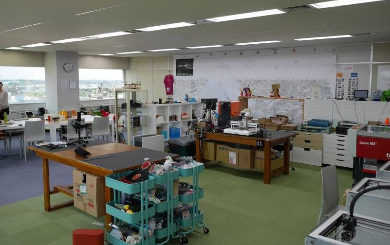
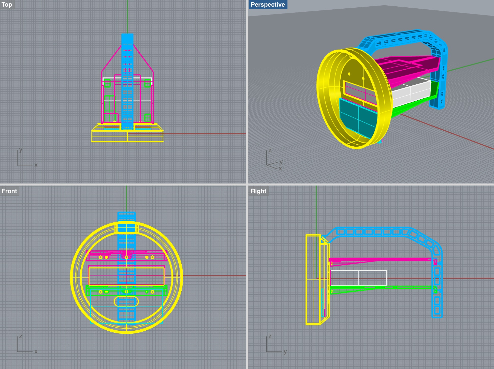
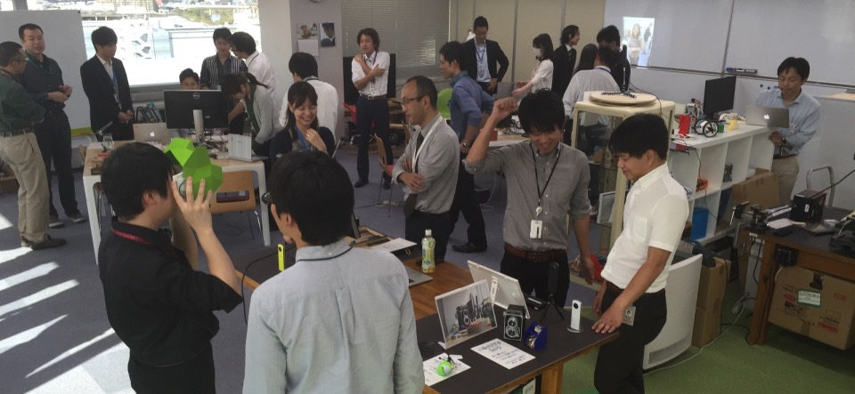
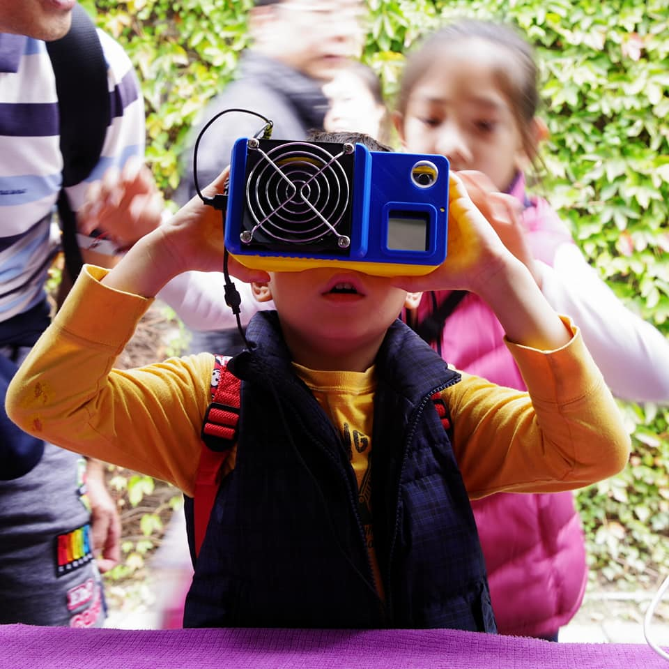
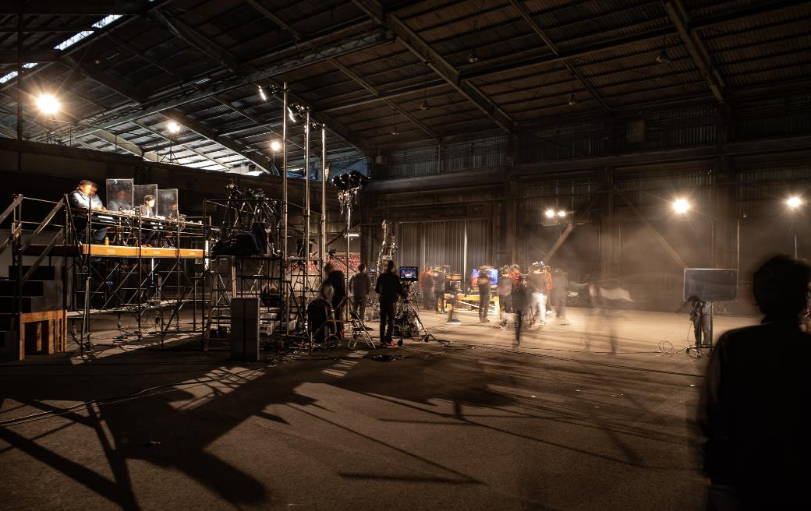

Selected Work — 04
つくる〜む
スライドで止まっていた新規事業の検討を、使う人の声と触れる試作で進める場をつくった。
Background
新規事業検討は、なぜPPTで止まるのか。
大企業の新規事業検討は、多くの場合スライドの中で完結する。市場分析、競合比較、事業計画。どれだけ精緻に仕上げても、ユーザーと話していなければ、仮説を積み重ねたものにとどまる。
「本当にユーザーが求めているか」を確かめる前に、社内の承認プロセスで消耗してしまう。そういう光景を繰り返し見てきた。
Concept
つくりながら考える。
社内に3Dプリンタ、レーザーカッター、工作機械を置いたファブスペース「つくる〜む」を立ち上げた。新規事業の検討の進め方を変えるための場所。
使う人が触れる形の試作をすぐにつくり、実際に使ってもらう。返ってくる言葉には、資料には書けない本音が入っている。「こういう時に使いたい」「ここが引っかかる」という声で、何を作るかが具体的になっていく。


市場調査 → スライド作成 → 社内承認 → ユーザー検証（遅い）
ユーザーと対話 → プロトタイプ制作 → 実使用フィードバック → 事業提案（速い）

What We Learned
相談が集まることで、見えてきたもの。
スペースが整うと、社内外からさまざまな相談が持ち込まれるようになった。新規事業を検討しているチーム、技術をどう活かすか迷っている研究者、顧客への提案を試したいセールス。目的も立場も違う人たちを手伝ううちに、つまずく所が似ていることに気づいた。
どの順番で、誰と進めればそこを越えられるかも、相談に乗り続けるうちに分かってきた。

-
01
問いの設定がずれている 「何をつくるか」から入ってしまい、「誰のどんな困りごとか」が後回しになる。試作を見せながら使う人と話して、何を解くかから決め直す。
-
02
検証のサイクルが遅すぎる 承認を取ってから動こうとするので、考えが古くなる。小さくつくって、すぐ使う人に見せる習慣が要る。
-
03
成果が個人に閉じている スペースで分かったことが、その人だけのものになる。会社に返す仕組みと、分かったことを話せる仲間が要る。
What Came Next
ここでの相談から、次の制度が生まれた。
つくる〜むで相談に乗ってきた経験と、事業検討がどこでつまずくかの理解が、社内外のチームが応募できる制度「TRIBUS」をつくるときの土台になった。一人ひとりを手伝う場から、会社全体で挑戦できる仕組みへ広げた。
また、「つくることを楽しむ」空気が社内にできて、NHK「魔改造の夜」にも出場した。参加希望者の中から2チーム約40名を面談で選び、制作会社との折衝、予算と進捗の管理まで自分で持った。スペースに通ううちに、挑戦する人どうしが知り合いになっていた。

Connected Projects